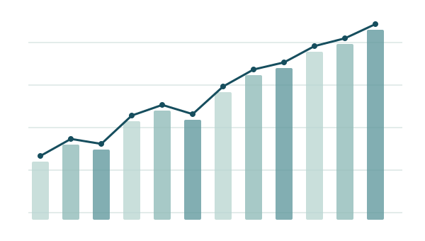

Healthcare Analytics & Business Intelligence
Turning complex data into better business decisions.
Healthcare costs, population insights and forecasting.
Python · Qlik · SQL · Statistical Modeling
Illustrative data

THE ANALYTICAL PERSPECTIVE
See the pattern.
Understand the context.
Selected work
From business questions
to analytical insights.
Selected professional projects. Visuals use illustrative data to preserve confidentiality.
Oncology AnalyticsPatient, provider & cost intelligence
Analytics GovernanceMethodology, KPIs & documentation
About Daniela
Economics. Data. Healthcare.
An analytical perspective grounded in business context.
I’m a Data Analyst based in Montréal. My work connects healthcare costs, population patterns and statistical analysis with the questions that matter to business decisions.
At Unimed Cascavel, I progressed from Strategic Information Assistant to Senior Strategic Information Analyst, developing analytical studies, performance indicators and forecasting work for management and executive audiences.
EconomicsMBA · Project ManagementMBA · Data Science & Big DataInternational Business · in progress
Technical perspective
Behind the analysis.
Explore small, runnable Python demonstrations built with synthetic data. They illustrate selected methods; they are separate from the internal project scripts.
Let’s connect